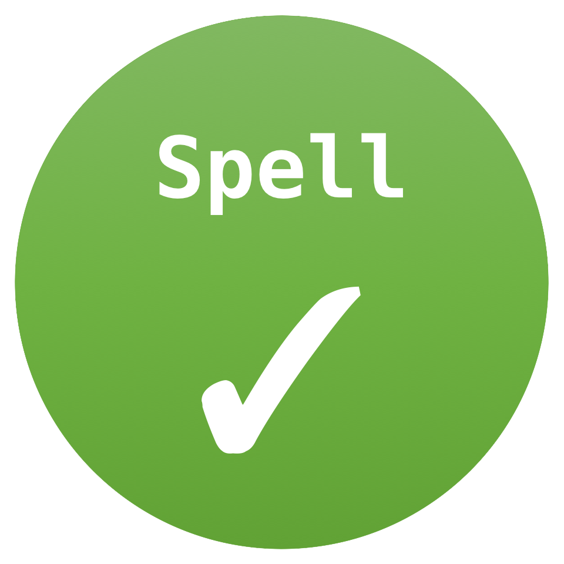

科研方法与常用工具
科研经验、方法文章和工具教程放在一起，涵盖文献检索、实验、写作与汇报。方法文章讨论工作中的判断，工具文档提供具体操作与配置。
科研入门与研究经验
Why are research skills so seldom taught? — Michael Nielsen
从物理研究经验出发，讨论研究技能与课堂解题的差别，以及研究者如何形成自己的工作方式。
Advice to a Beginning Graduate Student — Manuel Blum
关于阅读、思考、研究与写作的经验，其中谈到从问题出发、逐步补充背景的 top-down 阅读方式。
The importance of stupidity in scientific research — Martin A. Schwartz
2008 年的一页短文，讨论从有标准答案的课程进入未知问题时的困惑。
How Do I Get Started in Research? — Stanford Academic Advising
Stanford 的本科研究指导，介绍研究兴趣、教师交流与校内项目。
技术提问与问题描述
-
技术沟通文章，讨论如何描述目标、环境、已有尝试与错误信息。
文献检索与管理
-
官方检索帮助，介绍作者与标题搜索、引用追踪、相关论文和检索语法。
-
中文平台说明，涵盖学术搜索、问答与文献阅读。
-
官方入门教程，介绍文献保存、条目与附件管理，以及引用。
-
官方文档，介绍论文提交、版本、公开评审与作者回复等功能。
-
每日论文与社区讨论，关联论文、作者和项目。
-
本地 Markdown 笔记工具，支持双向链接。
-
将 Zotero 的引用、笔记与 PDF 批注导入 Obsidian。
-
浏览器扩展，用于保存文献信息与可获取的附件。
-
论文阅读、翻译与笔记工具。
-
围绕研究问题进行论文检索与阅读。
 Hugging Face Daily Papers
Hugging Face Daily Papers论文阅读与论文库
How to Read a Paper — S. Keshav
两页短文，介绍从概览到深入理解的三遍阅读法。
-
中文论文精读视频目录，涵盖研究背景、方法、实验与论文写作。 Transformer 逐段精读

-
自然语言处理论文库，收录会议论文及其引用信息。
Proceedings of Machine Learning Research
机器学习会议与 workshop 论文集，提供论文与补充材料。
实验与评测
A Recipe for Training Neural Networks — Karpathy
2019 年的训练经验文章，讨论数据检查、简单模型、拟合测试与训练排查。
Deep Learning Tuning Playbook — Google Research
深度学习调参手册，涵盖初始配置、实验组织和优化问题。
scikit-learn：Common pitfalls and recommended practices
通过代码对照解释数据泄漏、预处理不一致与随机性等常见问题。
Task-Specific LLM Evals that Do & Don’t Work — Eugene Yan
讨论面向具体 LLM 应用的评测对象、评价方法与实践经验。
-
Notebook 工具，将代码、分析文字、表格与图放在同一份文档中。
-
VS Code 扩展，用颜色区分 CSV／TSV 各列，并检查列数。
写作、排版与汇报
How to write a great research paper — Simon Peyton Jones
研究论文写作讲座与幻灯片，讨论问题、贡献与文章结构。
-
论文写作资料与检查清单，涉及格式、表达和投稿细节。
Learn LaTeX in 30 minutes — Overleaf
Overleaf 的 LaTeX 入门教程，介绍文本、公式、图片与引用。
-
Markdown 语法参考，包含标题、链接、列表、图片与代码块。
How to give a great research talk — Simon Peyton Jones 等
研究汇报讲座与幻灯片，讨论听众、信息组织与报告安排，也提供中文幻灯片。
Fundamentals of Data Visualization — Claus O. Wilke
数据可视化开放教材，讨论图表选择、配色与可读性。
-
协作白板与演示项目，用于组织图示和演示内容。
-
VS Code 的 LaTeX 编译、预览与引用补全扩展，配合本地 TeX 环境使用。

Code Spell Checker英文拼写检查扩展，支持笔记、README 与代码注释。
AI 工具与工程实践
Building effective agents — Anthropic
2024 年的工程文章，讨论固定工作流、自主 Agent 及常见设计结构。
-
Karpathy 展示日常任务中使用 LLM 的具体方式。
Building A Generative AI Platform — Chip Huyen
从系统角度讨论生成式 AI 平台中的数据、模型、检索与评估。
-
深度学习工程课程与讲座，涵盖数据、开发、部署与应用。
-
论文阅读工具，包含围绕方法与证据追问的 Grill Me 工作流。